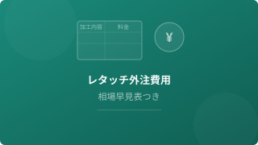

メーカー勤務のEC担当が、カメラ・写真・画像編集・ECサイト運用で調べたことをまとめています。
色補正・肌レタッチ・切り抜き・合成など作業内容別の相場と、20社以上のサービス料金を1ページに集約。外注先を探している方の比較用に。
個人が写真のレタッチ・画像加工を依頼できるサービスの種類、依頼の流れ、料金相場、選び方のポイントを整理。
写真の背景切り抜き・白抜きをプロに外注する場合の費用相場を調べました。1枚100円台〜の切り抜き専門サービスから、レタッチ込みの業者まで比較。

レタッチの外注費用を加工内容別に早見表で整理。1枚あたりの料金と枚数割引の仕組みもまとめた備忘録。
Amazon・楽天・メルカリ等での商品説明文の書き方のコツ。テンプレート例、NGパターン、文字数の目安をまとめた備忘録。
SNSで話題の「AIデータ収集」副業を調査。Outlier AI・Appen・Remotasksなど日本から使える6サービスの報酬・始め方・将来性を比較しました。
撮影・採寸・原稿の頭文字をとった「ささげ」の意味から、代行会社の選び方・10社比較まで。EC担当者が外注先を探すときの備忘録。
99,800円のMacBook Neo登場でMacの選び方が変わった。Neo・Air・Proの違いと用途別の選び方をまとめました。
写真系副業の種類・単価相場・現実的なロードマップを調べた記録。クラウドソーシングの初心者向け案件から始めるまでの流れをまとめています。
副業規定の3パターン・厚生労働省のガイドライン・住民税バレ対策まで。副業前に確認すべきことを実体験もまじえてまとめました。
採用担当の見解・スタジオのレタッチ基準・NGな加工の種類を調べました。「軽い補正はOK、別人はNG」という基準のラインを整理しています。
マッチングアプリでの写真詐欺問題・BeRealが流行した理由・加工の許容範囲についての考察。消費者庁データも参照しています。
フィルターとLightroomの仕組みの違い（非破壊編集・プリセット）を初心者目線で比較。フィード統一感を出したい人にはLightroomが向いています。
マッチ率が上がる写真の共通点（撮影場所・構図・加工の範囲）を複数の情報源をもとにまとめました。プロ撮影という選択肢についても。
背景ぼかしが不自然になる原因（距離・光量・AIの認識限界）と、自然な仕上がりにするためのコツをまとめました。
ツバサ
メーカー勤務のEC担当。商品撮影はスマホで済ませがち。Photoshopは苦手でアプリ派。アプリで対応しきれない本格的なレタッチはプロに依頼しています。このブログはカメラ・写真・EC周りで調べたことの備忘録です。